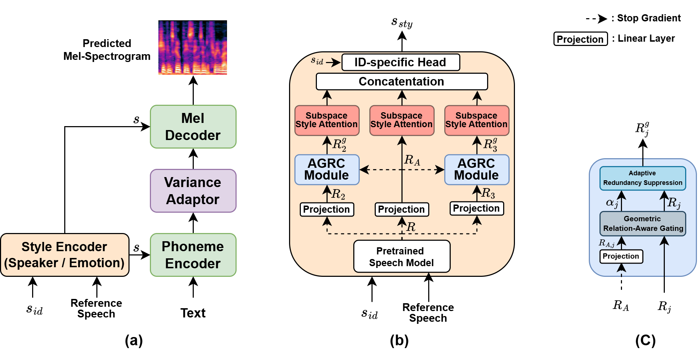

Expressive text-to-speech (TTS) requires style representations that capture acoustic characteristics associated with speaker identity and emotion, arising from acoustic factors in speech. Conventional expressive TTS employ reference encoders and Global Style Token (GST) frameworks to capture stylistic patterns from reference speech using token-based attention. However, GST derives a global style representation from a single reference representation, and the attention mechanism often concentrates on dominant tokens, limiting the ability to reflect diverse acoustic factors. To address this limitation, we propose an Anchor-Regulated Style Encoder (ARSE) that decomposes reference representations into complementary subspaces and regulates redundancy across them through anchor-guided gating to promote complementary representations. Experimental results show that the proposed ARSE enables expressive speech synthesis through structured modeling of multi-factor acoustic characteristics.
Model Architecture

Overall architecture of the proposed TTS framework: (a) FastSpeech2-based architecture with Conformer encoder and
decoder, conditioned on speaker and emotion style embeddings extracted from reference speech. (b) Anchor-Regulated Style Encoder
(ARSE) that derives complementary style components from multiple subspaces for multi-faceted style representation. (c) Anchor-Gated
Redundancy Control (AGRC) module adaptively suppresses anchor-aligned components to regulate cross-subspace redundancy.
Expressive Speech Synthesis
Emotion: Neutral
Sample 1: “Why has this egg not broken?”
Sample 2: “Monster made a deep bow.”
Emotion: Happy
Sample 1: “Mister share man, I move for a division.”
Sample 2: “Can I lodge here tonight?”
Emotion: Surprise
Sample 1: “This used to be Jerry's occupation.”
Sample 2: “All smile were real and the happier，the more sincere.”
Emotion: Sad
Sample 1: “Your path now goes south.”
Sample 2: “Look out! said Alice.”
Emotion: Angry
Sample 1: “I'm as bad as I can be.”
Sample 2: “Pussy can sit by the fire and sing.”